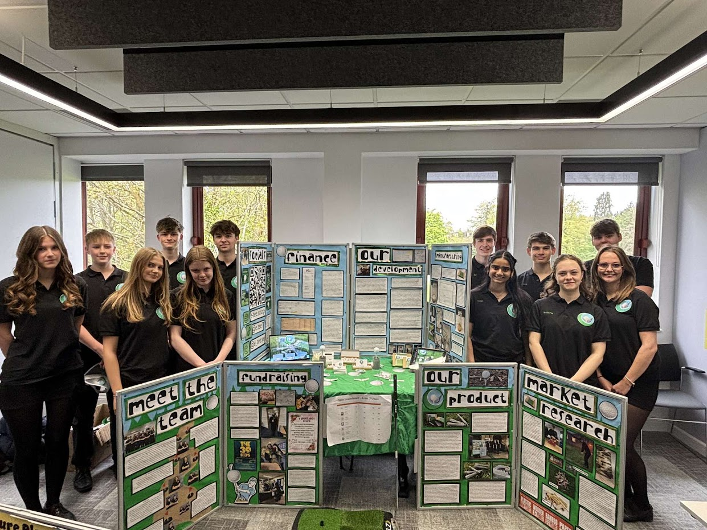

We are E-Tee, a young enterprise company led entirely by Year 12 students from Balcarras Sixth Form. We are devoted to saving the environment and providing a pleasant golfing experience at the same time. Our tees are perfect for every skill level, whether beginner or pro, and with our bespoke manufacturing process, we put only the utmost care into every product.
Initially, our goal was to make these tees out of a waste product from coffee production called “chaff.” Its main selling points were its rapid biodegradability, harmlessness to the surrounding grass and wildlife, and the lack of threat posed to groundskeeping equipment such as lawnmowers. Unfortunately, this material proved to be far too hard to work with, and we ran into issues regarding mould and longevity. Our solution to these issues came in the form of the humble sheet of A4. We noticed the school was throwing away vast amounts of the stuff, and decided recycled paper would fill the need for an easy, strong material to save from the rubbish bins. With our knowledge of eco-friendly glues, it was no difficulty at all to transfer to our now signature home-rolled tees.
The manufacturing process is nice and simple: our glue is made through the mixture of water and dextrin over heat. Dextrin is a fully biodegradable form of carbohydrate, which forms strong bonds when used as a glue. The tees begin as waste paper from the various sources around school, where it is cut into trapezoid strips which give it the classic tapered end. The strips are coated in glue before being rolled up into the tee-shapes, then dipped in a stronger concentration for extra hardness. Finally, a separate strip is wound around the top to form the head for the golf balls to rest in, before they’re left out to dry and set. The end product is the solid E-Tees you know and love, each formed with care.
Young Enterprise is a charity and competition whose purpose is to educate sixth form students about enterprise and finance. They work directly with teachers, volunteers, influencers and of course us, the students, with the aim of creating a successful future. Their mission has continued for over 60 years, supporting the development and application of enterprising mindsets and skills. They believe every young person has the opportunity to learn the vital skills and enterprising mindset needed to earn and look after their money and make a positive contribution to their community, so they empower these students to discover, develop and celebrate their skills and potential.
We use recycled paper from our school and a homemade adhesive formulation to create durable, biodegradable golf tees. Estimates suggest that around 80% of golfers use plastic tees, which remain as litter for around 450 years before disappearing completely, releasing toxic microplastics into the soil and killing lawns. In fact, many golf courses are considering banning plastic tees altogether. The paper tees we sell are safe to be left in nature. No more searching for pink plastic refuse in the woods. Our formulation is also superior to bamboo tees, which have to be shipped from the far corners of the world, and last far longer in the wild before breaking down, all the while remaining a hazard for wildlife when they snap to leave sharp debris scattered over the environment.